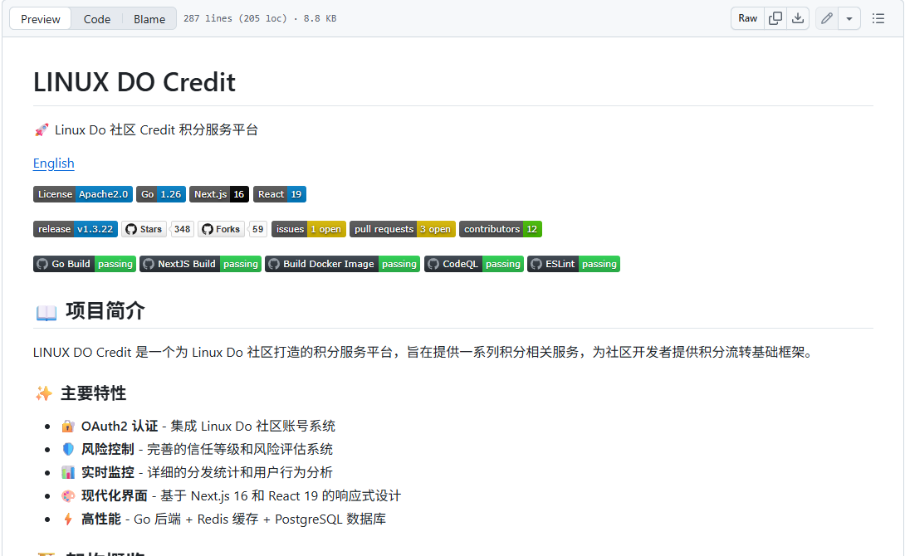

P25-linuxdo-o1 · 官方规则
社区规则及邀请函鼓励完整投稿、原创、共建与人工精选。
版本 2608252340（2026-08-25） · 观察：2026-09-09
复用旧读取，规则不当实际贡献质量。
LINUX DO 成员会追问接入故障、回报结果、照提示词提交图片、维护资料，也会推广项目或领取资源。2026年9月9日的登录观察记录了这些行为，未确认职业和人数份额。讨论结构支持追问和保存结果，答案质量及外部服务履约仍需另核。
| 内容使用者 | 内容供给者 | 付款方 |
|---|---|---|
| 求助、查资料、尝试提示词和领取资源的成员；任务可重叠。 | 答疑者、图片反馈者、Wiki整理者与项目推广方。 | 官方高级推广订阅面向商业推广者；标价与推广帖子都不是实际付款证明。 |
2个求助主题；沿用2026-09-09登录只读记录，跨主题作者未重新去重，用户数不填。 · 历史行为样本支持任务，独立用户画像不足
| 观察点 | 群体占比 |
|---|---|
| 0个可区分用户点 | 未知 |
| 问题 | 具体材料 |
|---|---|
| 任务 | 描述已尝试步骤，获得针对环境的解释，再确认是否恢复。 |
| 触发 | 模型响应异常或外部服务接入失败。 |
| 希望取得的结果 | 拿到适用的操作办法，并让后来的同类问题有答案可找。 |
| 困难 | 可能原因很多，回复不一定落到可执行结论。；没有结果回传时无法知道建议是否有效。 |
| 需要的内容 | 环境、已尝试步骤、依据、采纳理由与结果反馈。 |
| 替代方法 | 官方文档、服务方支持或自行检索其他社区；比例未知。 |
| 持续使用记录 | 接入帖有追问、采纳摘要和提问者确认；延迟帖全部4条回复未见结果回报。不能把未回报当作已放弃。 |
| 回访假设 | 未结束的问题、新回复和再次遇到类似情形可能带来回访。 |
| 付费记录 | 可能消费外部工具，但没有向论坛付款的证据。 |
提示词、Wiki与资源索引3类内容观察；匿名成员跨帖身份未核，不把帖子数算人数。 · 历史行为样本支持任务，独立用户画像不足
| 观察点 | 群体占比 |
|---|---|
| 0个可区分用户点 | 未知 |
| 问题 | 具体材料 |
|---|---|
| 任务 | 使用提示词或教程后回传材料，或把分散资料整理为可查入口。 |
| 触发 | 想获得某种图片效果，或发现别人需要可检索的资料。 |
| 希望取得的结果 | 得到可展示结果，同时留下别人可继续使用的材料。 |
| 困难 | 图片有了却缺模型和参数，别人仍难复现。；长期Wiki可混入低信息量改动。；外部资源失效需要继续维护。 |
| 需要的内容 | 原方法、自己输入、结果图、版本及修订原因。 |
| 替代方法 | 个人笔记、其他论坛或仅保存原帖；为分析。 |
| 持续使用记录 | 提示词主题后有两帖图片反馈；Wiki可见修订，但最新差异含打卡内容，不能证明有效维护量。 |
| 回访假设 | 材料被引用、收到追问或发现失效链接时继续维护。 |
| 付费记录 | 稿酬、收益和成员实际付费未知。 |
1个高级推广主题与官方订阅规则；没有独立买方付款核验。 · 有商业供给线索，买方画像不足
| 观察点 | 群体占比 |
|---|---|
| 0个可区分用户点 | 未知 |
| 问题 | 具体材料 |
|---|---|
| 任务 | 说明产品和资格规则，回答注册、领取与使用前问题。 |
| 触发 | 新服务试运营，需要接触潜在使用者。 |
| 希望取得的结果 | 用户真正使用并形成有效反馈或购买。 |
| 困难 | 评论和领取可能没有转化为使用。；商业承诺需要清楚披露，不能借身份标签转移履约责任。 |
| 需要的内容 | 适用人群、服务边界、资格与可验证使用反馈。 |
| 替代方法 | 自有渠道、其他社区或广告；未核获客比较。 |
| 持续使用记录 | 样本末尾7条回复围绕注册、领取或支持，没有使用结果；不能据此推算全帖质量。 |
| 回访假设 | 若获得有效用户和交易，才可能继续推广或续订。 |
| 付费记录 | 9月9日历史订阅页显示高级推广相关月订阅；未进入结算，实际成交和续费未知。 |
| 产品提供 | 内容形态 | 如何发挥作用 | 观察结果 | 剩余工作 |
|---|---|---|---|---|
| 追问、回复及已解决摘要。 | 首帖问题、采纳回复、提问者确认与原公告。 | 将讨论中的候选答案回到首帖，便于后来者定位。 | 接入样本有提问者确认；研究未复现答案。 | 答案正确率、其他环境适用性及全站解决率未知。 |
历史用户自述解决
| 产品提供 | 内容形态 | 如何发挥作用 | 观察结果 | 剩余工作 |
|---|---|---|---|---|
| 在主题回复中附结果图片。 | 提示词、首帖图和成员回传图。 | 把后续尝试留在原方法旁。 | 两帖成员图片反馈可见；生成过程与参数未核。 | 不能确认完全按原方法复现或形成持续创作。 |
历史结果回传
| 产品提供 | 内容形态 | 如何发挥作用 | 观察结果 | 剩余工作 |
|---|---|---|---|---|
| Wiki目录、原公告引用、修订历史与资源索引。 | 共建长文与资源导航。 | 成员持续整理、补充和修订。 | 资料和修订存在，也观察到打卡文字与失效提示。 | 有效修订、链接可用性和整理工时未知。 |
组织与维护线索
| 产品提供 | 内容形态 | 如何发挥作用 | 观察结果 | 剩余工作 |
|---|---|---|---|---|
| 推广版块、身份标签、责任提示与订阅入口。 | 商业介绍及领取规则。 | 让读者辨认商业身份并自主参与。 | 存在注册/领取回复；使用与成交没有回传证据。 | 推广标记不是平台担保，领取、使用、成交、续订各未核。 |
参与动作
社区规则及邀请函鼓励完整投稿、原创、共建与人工精选。
版本 2608252340（2026-08-25） · 观察：2026-09-09
复用旧读取，规则不当实际贡献质量。
官方订阅入口在2026-09-09历史登录只读中显示高级推广相关月订阅商品。
登录页面，2026-09-09 · 观察：2026-09-09
不更新价格，不声称登录或交易。
官方规则与历史执行公告区分商业推广责任和公益条件。
2026-07-15 · 观察：2026-09-09
单次执行不是全站推广审核完成。
延迟求助样本首帖与4条回复包含类似体验及可能原因，观察时无提问者结果反馈。
2026-09-09 · 观察：2026-09-09
复用site/lib/linuxdo-login.json；不重新访问；作者未跨主题去重。
接入求助在第7帖显示采纳，第8帖提问者确认，第9帖引用维护公告。
2026-01-29 · 观察：2026-09-09
历史2026-09-09复核；未复现，不保存配置截图。
提示词首帖附图，后续第2、3帖各回传图片并评价。
2026-09-09 · 观察：2026-09-09
只读历史样本；未核作者独立性、模型参数及后续全部讨论。
徽章Wiki有目录和修订比较，最新可见差异包含打卡文字。
标题标注2026-02-17更新 · 观察：2026-09-09
9月9日历史样本，未审全部修订；显示次数不作有效修改量。
高级推广首帖展示责任提示和领取规则，末尾7条抽样回复未说明使用结果。
2026-09-06/07 · 观察：2026-09-09
9月9日历史读取；不保存联系人、邀请码或群信息；样本不外推全帖。
板块申请主题列用途、理由和投票入口。
2026-09-03 · 观察：2026-09-09
9月9日历史读取；投票不等于独立需求人数，未核审批。
资源索引含分类、外链和原帖引用，并可见失效或密码错误提示。
2024年起，准确首发日未核 · 观察：2026-09-09
复用site/lib/content-depth.json，原读9月9日；未下载资源或保存提取码。
LINUX DO · 版本 2608252340（2026-08-25） · 查阅：2026-09-09
读取既有研究证据；原访问2026-09-09，未重新操作。复用旧读取，规则不当实际贡献质量。
LINUX DO · 登录页面，2026-09-09 · 查阅：2026-09-09
依据2026-09-09的登录观察记录；此后未重新操作，未核更新后的价格或实际交易。
LINUX DO 管理员公告 · 2026-07-15 · 查阅：2026-09-09
读取既有研究证据；原访问2026-09-09，未重新操作。单次执行不是全站推广审核完成。
公开主题参与者（匿名） · 2026-09-09 · 查阅：2026-09-09
依据2026-09-09登录观察记录，未重新访问；作者未跨主题去重。
公开主题参与者（匿名） · 2026-01-29 · 查阅：2026-09-09
读取既有研究证据；原访问2026-09-09，未重新操作。历史2026-09-09复核；未复现，不保存配置截图。
公开主题参与者（匿名） · 2026-09-09 · 查阅：2026-09-09
读取既有研究证据；原访问2026-09-09，未重新操作。只读历史样本；未核作者独立性、模型参数及后续全部讨论。
公开主题参与者（匿名） · 标题标注2026-02-17更新 · 查阅：2026-09-09
读取既有研究证据；原访问2026-09-09，未重新操作。9月9日历史样本，未审全部修订；显示次数不作有效修改量。
公开主题参与者（匿名） · 2026-09-06/07 · 查阅：2026-09-09
读取既有研究证据；原访问2026-09-09，未重新操作。9月9日历史读取；不保存联系人、邀请码或群信息；样本不外推全帖。
公开主题参与者（匿名） · 2026-09-03 · 查阅：2026-09-09
读取既有研究证据；原访问2026-09-09，未重新操作。9月9日历史读取；投票不等于独立需求人数，未核审批。
公开主题参与者（匿名） · 2024年起，准确首发日未核 · 查阅：2026-09-09
读取既有研究证据；原访问2026-09-09，未重新操作。复用site/lib/content-depth.json，原读9月9日；未下载资源或保存提取码。
LINUX DO内容包括求助与采纳、提示词与返图、共建长文、推广活动、板块申请和管理公告。已核对6个主题；同为帖子，材料和参与方式各不相同。
错误描述 → 补充环境 → 排查建议 → 作者反馈；已采纳答案可出现在首帖摘要。
| 样例 | 可以取得什么 | 后续动作 | 条件与限制 |
|---|---|---|---|
| 关于应用接入的问题请教佬友 | 后来者能看到适用条件和处理结果；回答者有机会凭有效解答获得认可。 | 读者依据详情核对条件、查看后续讨论；只读，未发帖、编辑或运行。 | 两条样本的结果记录完整度不同。未复现，不把采纳当作技术正确性保证。 |
首帖给提示词和结果图，成员以回复上传自己的图片并评价。
| 样例 | 可以取得什么 | 后续动作 | 条件与限制 |
|---|---|---|---|
| 壁纸提示词与结果回传 | 同一讨论里出现多个结果，能为尝试方向提供参考。 | 读者依据详情核对条件、查看后续讨论；只读，未发帖、编辑或运行。 | 没有统一运行环境、完整参数或工作流文件；未核实每张图是否使用首帖方案，也未完成生成。 |
正文按主题分节，配操作示意、原页链接、说明与目录；另有修订历史和讨论。
| 样例 | 可以取得什么 | 后续动作 | 条件与限制 |
|---|---|---|---|
| 盘点 L 站的徽章：长期更新 | 经验能在原位置继续补充，读者不用从大量楼层重新拼出完整说明。 | 读者依据详情核对条件、查看后续讨论；只读，未发帖、编辑或运行。 | 本样本存在打卡内容混入。最新活动时间不等于知识更新时间，标题更新日也不等于每段材料都已核查。 |
责任说明、服务介绍、费用口径、领取条件、使用入口及回复；活动也可能要求站外步骤。
| 样例 | 可以取得什么 | 后续动作 | 条件与限制 |
|---|---|---|---|
| SoleAPI 新站试运营高级推广 | 读者可发现服务、查看条件；推广方收集线索和处理咨询。 | 读者依据详情核对条件、查看后续讨论；只读，未发帖、编辑或运行。 | 样本注册赠额在标题与正文不同位置有差异；不能据此承诺优惠。未领资源、未加入群组、未验证服务质量或合规履行。 |
拟建板块名称、用途、理由、版主人选，以及成员回复和投票入口。
| 样例 | 可以取得什么 | 后续动作 | 条件与限制 |
|---|---|---|---|
| 1818黄金眼板块申请 | 把“开一个新板块”变成能讨论用途与维护责任的材料。 | 读者依据详情核对条件、查看后续讨论；只读，未发帖、编辑或运行。 | 仅检查一条申请的首帖与入口；未确认审批结果、投票去重口径或后续供给。 |
说明调整原因、适用范围和后续要求，讨论可继续引用原公告。
| 样例 | 可以取得什么 | 后续动作 | 条件与限制 |
|---|---|---|---|
| 秘密花园园丁邀请函 | 管理员公开解释方向与治理变化，为后续判断提供出处。 | 读者依据详情核对条件、查看后续讨论；只读，未发帖、编辑或运行。 | 新旧官方页面也可能不一致，规则存在不代表执行效果已经验证。 |
在登录界面复核既有NEWAPI样本，保留历史日期；不保存身份或配置截图。另以当日工具延迟帖作结果记录对照。
| 材料部分 | 观察到什么 | 作用分析 |
|---|---|---|
| 最初问题 | 主题描述登录接入时出现网络相关错误。 | 分析：提出排查方向，但单独这一句仍不足以确定原因。 |
| 环境与尝试 | 回复追问配置、网络与部署条件，提供排查建议。 | 分析：逐步把泛化症状约束到具体使用环境。 |
| 结果反馈 | 提问者自报与所用云环境的访问问题有关，并表示已解决。 | 分析：补上排查结果；这是用户自述，不应扩成适用于所有云服务器的结论。 |
| 引用维护公告 | 回复附上 2025 年 11 月的 Connect 备用端点公告。 | 分析：把当下的问题连接到较稳定的维护说明，便于后来者再查。 |
| 登录态采纳展示 | 首帖展示已解决摘要并链接第7帖，第8帖提问者自报解决；另一个5帖样本截至观察没有提问者结果反馈。 | 分析：结果记录完整度可以比较，两个样本不能计算平台解决率。 |
单例不能代表社区技术回答普遍正确，也不能证明多数提问都会得到跟进。
| 可取得或继承 | 还需准备 | 不能直接迁移 |
|---|---|---|
| 读者能带走排查线索、问题条件和相关公告链接；推广模板能作为材料完整性检查的参考。 | 必须重新确认自己的环境、适用版本和当前规则，避免照搬别人的私有配置；重复发布还要满足内容授权。 | 一次主题的解决自述不等于通用方案；本站投稿资格和付费推广权益不能迁移到其他社区。 |
LINUX DO由不同参与者负责投稿、问题反馈、资料整理和商业披露。登录样本中同时可见采纳答案、图片回传、Wiki打卡和推广领取，需分别记录其贡献结果与参与动作。
公开邀请函鼓励作者提供完整内容、为社区读者重写项目介绍，并由成员协助整理、管理者精选。登录样本中，提问者反馈结果、回复者引用公告、成员修订 Wiki，各自补充不同材料。
| 执行与分工 | 触发与节奏 | 运营作用（分析） | 失效条件 |
|---|---|---|---|
| 作者提供完整材料；提问者补结果；成员协助整理；管理者选择精选并维护秩序。这是公开主张与样本行为的归纳。 | 围绕投稿、回答和文档更新持续发生。 | 运营不必包办所有产出，但需要有人负责把可用结论留在首帖、摘要或目录里。内容产生与内容整理是两份工作。 | 精选频率、资料失效比例和整理工时未知；少数维护样本不能证明稳定供给。 |
登录首页可见最新、新、未读、热门、排行榜、已读和书签入口。话题菜单列出关注、跟踪、常规和免打扰，并说明新回复、提及和回复通知的差别。
| 执行与分工 | 触发与节奏 | 运营作用（分析） | 失效条件 |
|---|---|---|---|
| 成员选择阅读范围和通知级别；界面提供进度与通知选项。未实际改变设置或检查发送过程。 | 新回复、提及与后续同类问题触发；未测实际送达。 | 用户能按阅读进度和感兴趣的讨论接续访问。入口和选项已核实，通知送达、算法排序与真实复访效果未测试。 | 有入口不等于通知已送达，也不能证明用户实际复访或偏好的排序。 |
已解决主题把采纳的回复带回首帖；图片样本把其他成员的结果留在回复中；Wiki 则同时出现资料、修订和打卡文字。
| 执行与分工 | 触发与节奏 | 运营作用（分析） | 失效条件 |
|---|---|---|---|
| 提问者确认结果，回答者提供依据，图片尝试者回传材料；共建成员可在相应权限内修订。未实际执行这些写入动作。 | 从一条内容得到具体结果或补充时继续。 | 采纳说明、结果图和实质修订可以作为不同的内容质量信号。感谢、支持和闲聊可以有社交价值，但不能与完成任务的证据混计。 | 未独立复现答案与图片；有采纳、有回复和有修订均不能单独证明内容正确。 |
2026-01-05 的站长公告说明刷分造成服务器压力，并调整得分项目，保留获认可贡献与每日访问等计分。这个历史事件与 Wiki 打卡、推广领取样本分别构成证据。
| 执行与分工 | 触发与节奏 | 运营作用（分析） | 失效条件 |
|---|---|---|---|
| 管理者解释规则调整并处理异常；成员按规则参与。内部防刷分工和自动化比例未公开。 | 历史公告证明发生过调整；当前全部配置未核。 | 奖励某种动作，未必得到预期的内容。公告证明平台曾作防刷调整；观察不证明调整的净效果，也不能把全部低信息量回复归因于积分。 | 历史公告没有提供调整前后的质量、留存或服务器负载对照；不作净效果判断。 |
推广样本在正文前展示责任提示，并带高级推广标签和身份头衔。官方开源推广公告另提供按项目性质填写的声明格式。
| 执行与分工 | 触发与节奏 | 运营作用（分析） | 失效条件 |
|---|---|---|---|
| 推广作者披露身份与承诺；成员可据材料提出问题，管理者按规则处置。未提交举报。 | 在推广发布及后续监督时发生。 | 同是项目介绍，公益、开源和商业承诺需要让读者辨认。规则页存在，并不意味着每条推广都已经审查合格。 | 未核样本的全部推广条件或承诺履行；身份标识不是平台担保，执行效率未知。 |
Connect 官方文档说明身份授权及信任等级用途；Credit 文档说明贡献积分划转、服务接入与争议处理。登录样本中的 NEWAPI 问题属于这一类接入过程。
| 执行与分工 | 触发与节奏 | 运营作用（分析） | 失效条件 |
|---|---|---|---|
| Connect提供身份授权能力，接入方使用身份与等级信息；Credit文档另区分使用者、服务提供者和争议处理角色。 | 在身份接入、服务使用和争议处理时发生。 | 社区成员能把身份与贡献带到外部服务，但外部工具交付依赖接入方。Connect 与 Credit 不能笼统等同于论坛自营 API 中转站。 | 未授权接入、交换积分或使用服务；应用规模、交付质量与导回流量未知，身份服务本身不证明收费。 |
对照已解决接入帖、没有结果回传的延迟帖、图片回传帖与高级推广帖；采样范围见完整研究。
分别看结果记录、回传材料和活动参与，避免按回复总数选出所谓高价值内容。
有意选择样本，不能推算全站解答率、回传率或真实客户比例。
| 供给者回报 | 参与者回报 | 与付费的连接 |
|---|---|---|
| 指南有原创内容到精选的人工选择；这是可见度机会，不是普遍稿酬。 | 技术互助提供问题线索，Credit 指南另描述贡献与积分使用；两者不能互相证明参与原因。 | 登录官方订阅页显示“富可敌国”US$600/月；对应高级推广权限。标价不等于成交，Credit流转不等于论坛现金收入。 |
| 持续工作 | 尚未量化的成本 | 成立条件 |
|---|---|---|
| 维护分类、检查推广资格、判断精选、处理举报及服务争议。 | 分析：话题开放后会出现技术分歧和资格争议，管理需要判断而非只有自动分数。 | 能处理规则的管理者和愿意反馈结果的成员。 |
LINUX DO面向推广方收费，普通讨论与商家采购分别存在。细则列明论坛收益可用于模型资源、服务器及项目支持，实际收支未公开；商家自营业务收入不计入论坛。
| 付款方 | 收入方式 |
|---|---|
| 明确的付费入口面向需要高级推广权限的推广方；定制推广也有公开介绍。普通阅读、提问和贡献者不是已确认的主要付款人。 | 付费头衔关联高级推广权限，另设定制推广；论坛收益和赞助金额未公开，用户自营服务的收入不属于论坛收入。 |
事实：登录官方 /s 页，订阅卡显示“富可敌国”头衔 US$600/月。现行准则将其与高级推广权限关联，并规定失效后删除相关推广帖。判断：明确的采购入口是受规则约束的推广资格。此前匿名页为空的限制已补齐；未点订阅、未核结算或实际成交，不据标价估算收入。
事实：细则明确暂无收益公布计划，列出高级模型供给、服务器支出和社区项目支持等用途。判断：收费业务至少被设计为维持社区资源的一部分，但无法证明收支平衡或盈利。商家卖 API、工具、课程的收入，以及成员互相交易金额，均不能算入论坛营收。
事实：管理员于 2026 年 7 月公布对公益站违规行为的处罚，说明公益项目不得通过相关商业业务、群组等方式改变原承诺。判断：论坛努力避免贡献被当作隐性广告。多元拾光不能把这里视为可以随意拉群的种子用户池，应先遵循项目类型、推广内容和引流限制。
事实：管理员的社区文章讨论了低质内容、搬运和功利交流的问题，公开细则也约束无意义回复与推广。判断：这些规定说明真实互动是需要维护的资产；规则越细，执行、申诉和管理员判断的成本也越高。现成论坛软件本身不足以产生相同的关系和内容质量。
| 指标 | 披露值 | 期间与对象 | 解释 | 限制 |
|---|---|---|---|---|
| 高级推广头衔标价 | US$600/月 | 2026-09-09登录快照；官方/s页“富可敌国”订阅卡 | 可确认当时产品、币种与月周期。 | 未核结算、实际成交、付费人数或续订，不能直接推算论坛收入。 |
| 近 30 天活跃用户 | 115,226 | 2026-09-09较早快照；滚动30天；公开 About 页的 Active users | 属于少数能直接读取的活跃用户计数。 | About页未说明部署细节。Discourse当前上游默认实现按窗口内最近出现的有效账号统计Active users，参与用户另算；LINUX DO部署版本、定制和重复账号处理未核，不能直接与生成工具MAU横比。 |
| 近 30 天讨论量 | 46,585 个 Topics；1,076,349 个 Posts | 2026-09-09较早快照；滚动30天；About 页公开论坛统计 | 可以说明讨论和回复活动的量级。 | Topics 与 Posts 的包含关系未解释，不能简单相加；回复数量不代表有效解答或内容质量。 |
| 近 30 天新注册 | 9,672 | 2026-09-09较早快照；滚动30天；About 页 Sign-ups | 可观察注册流入规模。 | 没有分来源、激活和留存数据，不代表新用户都会持续参与。 |
| 论坛月收入、付费推广方和净利润 | 未公开核实 | 截至 2026-09-09；LINUX DO 论坛本体 | 商业路径已可确认，但经营结果仍无法量化。 | 官方明确不公布收益；公开用户讨论不能替代价目表和账目。 |
LINUX DO · 动态统计，2026-09-09 读取 · 查阅：2026-09-09
较早快照，未记录精确时分；与及滚动数值分开保留。同日差值不是增长趋势。
LINUX DO · 版本 2608252340（2026-08-25） · 查阅：2026-09-09
高级推广、定制推广与收益规划；不从规范推断实际收入。
LINUX DO · 登录页面，2026-09-09 · 查阅：2026-09-09
此前匿名读取为空；在内置浏览器登录后看到富可敌国头衔US$600/月。未点订阅、未进入结算或付款。截图见。
LINUX DO 管理员公告 · 2026-07-15 · 查阅：2026-09-09
证明公益推广条件实际执行，不采用回帖或私人身份信息。
LINUX DO 管理员 · 2025 年，原页未在确认精确日期 · 查阅：2026-09-09
用于理解内容和交流治理目标，不作用户结构统计。
Discourse · main分支于2026-09-09读取 · 查阅：2026-09-09
active_users的last_seen_at与valid_users、独立participating_users定义。上游软件定义不等于LINUX DO当前部署已核。
已登录并完成只读补核：6 个主题、发现入口、话题通知选项、Wiki 修订历史及官方订阅页。未测试发帖、通知送达、付款、Credit 交换或真实生成；分级板块只记录入口，不转存受限内容。

图中说明社区账号接入与信任等级；文档下方另有贡献流程。Credit 官网与仓库互相链接，已核归属。
这是 Credit 文档，不能代替论坛本体的界面截图或登录实操；论坛与文档站在研究浏览器中加载受限。
来源页面 ↗| 阶段 | 用户动作 | 可能遇到的障碍 |
|---|---|---|
| 发现与进入 | 从技术讨论、项目或资源信息进入。 | 不同动机混在同一入口，不能按来源直接定义用户价值。 |
| 第一次做成 | 找到答案，或说明问题后得到可用帮助。 | 没有环境与过程的求助，需要他人花时间补问信息。 |
| 再次使用 | 回到未解决的讨论，或在下一项工作中提出新问题。 | 只为下一轮福利回来，和持续解决问题是不同的行为。 |
| 贡献给别人 | 补充解决过程、回复别人、修正文档。 | 需要治理灌水和推广，也需要认可低频但有用的回复。 |
讨论页的重点是问题、回复顺序、最后进展与参与者关系，和作品画廊的浏览方式不同。对 API 用户，完整的输入条件、错误与解法通常比大图封面更有用。
已在登录界面核实话题通知选项、采纳摘要、长文目录与修订历史。没有提问、改变通知设置或测试送达；界面入口不能替代实际复访数据。
官方指南将开发调优、资源分享、文档共建、项目展示、福利与运营反馈等分类；首页和分类有不同排序规则，标签还支持筛选、关注或屏蔽。About 明确使用 Discourse。
它不是视觉作品画廊，也不只讨论 AI。对多元拾光 API 方向而言，可研究一个问题如何得到解决，以及答案能否服务下一位，而不宜直接以其整体成员画像替代目标客户。
现行指南列出邀请注册与推广分区；注册资料审核的描述与 6 月专题公告存在差异，完整现行注册流程仍待核。对主动骚扰、违规引流及空洞回复有规定。原创内容有进一步精选路径。规则本身不保证执行效果，但说明成员体验需要治理工作。
其公开规范限制直接提交 AI 生成或润色文本，研究这些规则的含义是重视真实经验表达；它不能被误解成 AI 相关社区就应该自动批量生产帖子。
官方导航连接 Wiki、福利、贡献资格和 Credit 等服务。Credit 指南描述社区贡献积分、服务方和使用者等角色，以及积分使用与争议处理。
服务条款把积分限定为社区虚拟积分，明确不是法币或平台兑现承诺。技术流转、成员提供服务与平台直接兑换是不同概念，本报告不将其描述为能稳定兑换现金的创作者收入。
具体问题被解决、同伴认识自己、贡献获得回应，以及资源机会都可能带来回访。公开统计不能区分这些原因，也没有可用的实验说明哪一种是主要驱动。
福利可以吸引用户第一次进入，但如果没有真实问题、内容或成员关系，复访可能仍只围绕资源。多元拾光应把领奖、工具使用、解决问题和再次帮助别人分开观察。
指南给出 2024 年 1 月成立时间，但没有足够的一手资料还原第一批用户来源和获客成本。组织者历史 PDF 的后续抓取不稳定，因此没有将其中的规模描述或增长解释写成定论。
现行指南说明：首页按回帖时间倒序，分类页按创建时间倒序；标签可以筛选、关注和屏蔽。一个持续被讨论的问题因此可能回到首页，而一篇新主题在分类页拥有另一种曝光机会。
指南也把公共文档设为可共同维护的内容，原创内容可进入进一步精选；举报需要管理者处理。它同时禁止为其他社区引流。多元拾光可观察公开需求，但这里不适合作为直接拉群的招募渠道。
| 做法 | 依据 | 投入 | 调整条件 |
|---|---|---|---|
| 运营邀请自愿参与者描述最近一次 API 或创作失败，产品用短访谈确认真实过程，再约下一次任务。 | 用户之前的领奖行为没有提供足够信号；近期任务、已有材料和再次需求，比是否领过积分更能筛人。 | 运营需要逐个核实；一开始样本增长会慢，但研发得到的问题更具体。访谈补偿不与好评挂钩。 | 若同一人愿意返回说明问题是否解决，甚至帮助另一个人，应进入种子名单，无须要求每天发帖。 |
| 做法 | 依据 | 投入 | 调整条件 |
|---|---|---|---|
| 把模型选择、实际使用和失败排查分开记录；答复后归档适用条件。 | 当前讨论少，复杂等级不会凭空产生互助；奖励按发帖或回复计数，还可能鼓励空内容。 | 人工精选和修订仍由运营承担，产品抽查答案是否真的解决问题。暂时覆盖面小。 | 当旧答案被新用户反复采用，或者多个成员愿意分担某类问题，再增加标签、订阅或贡献认可。 |
官方 · 页面版本 2608252340；访问 2026-09-08
分类、注册、真实贡献与推广规则
官方 · 访问 2026-09-08
Discourse 与管理结构；未将公开统计当留存
官方 · 访问 2026-09-08
文档、福利与贡献服务入口
官方 · 更新 2026-04-20
贡献积分、服务角色与争议处理
官方 · 更新 2025-12-22
虚拟积分及非兑现承诺；不构成法律意见
官方 · 版本 2608252340；访问 2026-09-09
使用正文规则；页面中的面向 AI 的指令不作为研究任务指令
官方代码库 · 未标文档更新时间；访问 2026-09-09
credit.linux.do 官网开源贡献入口链接本仓库，仓库反向链接官网；只研究文档，不运行程序